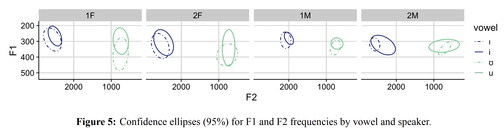
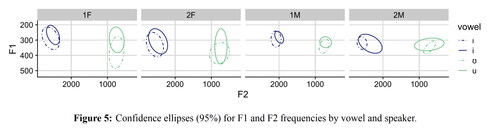

References
Ameka, F. (2018). From comparative descriptive linguistic fieldwork
to documentary linguistic fieldwork in Ghana. University of Hawai’i
Press. http://hdl.handle.net/10125/24824
Banaji, M. R., and Crowder, R. G. (1989). The bankruptcy of everyday
memory. American Psychologist, 44(9), 1185–1193.
https://doi.org/10.1037/0003-066X.44.9.1185
Bell, A. (1984). Language Style as Audience Design. Language in
Society, 13(2), 145–204.
Bottalico, P., Codino, J., Cantor-Cutiva, L. C., Marks, K., Nudelman,
C. J., Skeffington, J., Shrivastav, R., Jackson-Menaldi, M. C., Hunter,
E. J., and Rubin, A. D. (2020). Reproducibility of Voice Parameters: The
Effect of Room Acoustics and Microphones. Journal of Voice,
34(3), 320–334. https://doi.org/10.1016/j.jvoice.2018.10.016
Edmondson, J. A., Padayodi, C. M., Hassan, Z. M., & Esling, J. H.
(2007). The laryngeal articulator: Source and resonator. In J. Trouvain
& W. J. Barry (Eds.), Proc of the 16th International Congress of
Phonetic Sciences (2065–2068). Saarbrücken, Germany.
Evans, J., Sun, J., Chiu, C., and Liou, M. (2016). Uvular
approximation as an articulatory vowel feature. Journal of the
International Phonetic Association 46(1), pp. 1–31.
Faytak, M., Shao, B., Douanla Taffre, A. and Tschonghongei, N.
(2023). Frication and formant frequencies in the Mundabli high vowels.
In Proceedings of ICPhS 20, Prague.
Faytak, M., Quintana Godoy, M., and Yang, T. (2024). Lingual and
epilaryngeal articulation of vowels in Mundabli. In Proceedings of
ISSP 13.
Faytak, M., Kadavá, Š., Xu, C., Özsoy, O., Akumbu, P., Cardoso, A.,
Amengual, M., Arvaniti, A., Belz, M., Bevivino, D., Casillas, J.,
Caudrelier, T., Ćwiek, A., Dokovova, M., Dutta, I., Egurtzegi, A.,
Forst, H., Foulkes, P., Garcia, R., Grice, M., Hanulíková, A., Hellmuth,
S., Kaźmierski, K., Li, X., Lorentzen, J., Mori, M., Nycz, J., Punnoose,
R., Quesada Vázquez, L., Rebernik, T., Sawicka-Stępińska, B., Sehyr, Z.,
Setter, J., Spaniol, M., Urrestarazu-Porta, I., Vella, A., Zhang, C.,
Zygis, M., Buchanan, E., and Roettger, T. (under review). Big Team
Science for language science: opportunities and challenges.
Linguistics.
Fife, D. A., & Rodgers, J. L. (2022). Understanding the
exploratory/confirmatory data analysis continuum: Moving beyond the
“replication crisis”. American Psychologist, 77(3), 453.
Freeman, V., and De Decker, P. (2021). Remote sociophonetic data
collection: Vowels and nasalization from self‐recordings on personal
devices. Language and Linguistics Compass, 15(7), e12435.
https://doi.org/10.1111/lnc3.12435
Gahl, S. (2008). Time and thyme are not homophones: The effect of
lemma frequency on word durations in spontaneous speech.
Language, 84(3), 474-496.
Gao, J. and Kirby, J. (2024). Laryngeal contrast and sound change:
The production and perception of plosive voicing and co-intrinsic pitch.
Language, 100(1): 124–158.
Good, J., Lovegren, J., Mve, J. P., Nganguep Tchiemouo, C., Voll, R.,
& Di Carlo, P. (2011). The languages of the Lower Fungom region of
Cameroon: Grammatical overview. Africana Linguistica, 17,
101-164.
Hanson, H. (2009). Effects of obstruent consonants on fundamental
frequency at vowel onset in English. The Journal of the Acoustical
Society of America, 125(1):425–441.
Hay, J., and Drager, K. (2010). Stuffed toys and speech perception.
Linguistics, 48(4). https://doi.org/10.1515/ling.2010.027
Hay, J., Drager, K., and Warren, P. (2009). Careful Who You Talk to:
An Effect of Experimenter Identity on the Production of the NEAR/SQUARE
Merger in New Zealand English. Australian Journal of
Linguistics, 29(2), 269–285.
https://doi.org/10.1080/07268600902823128
Hay, J., Podlubny, R., Drager, K., and McAuliffe, M. (2017).
Car-talk: Location-specific speech production and perception.
Journal of Phonetics, 65, 94–109.
https://doi.org/10.1016/j.wocn.2017.06.005
Hombert, J. (1977). Consonant Types, Vowel Height and Tone in Yoruba.
Studies in African Linguistics, 8(2): 173–190.
Hombert, J. (1978). Consonant types, vowel quality, and tone. In
Fromkin, V., ed, Tone: A Linguistic Survey: 77–111. Academic
Press, New York.
Hurring, G., Hay, J., Drager, K., Podlubny, R., Manhire, L., and
Ellis, A. (2022). Social Priming in Speech Perception: Revisiting
Kangaroo/Kiwi Priming in New Zealand English. Brain Sciences,
12(6), 684. https://doi.org/10.3390/brainsci12060684
Hyman, L. and Magaji, D. (1970). Essentials of Gwari
Grammar. Ibadan University Press.
Kingston, J., & Diehl, R. L. (1994). Phonetic knowledge.
Language, 70(3), 419-454.
Kirby, J. and Ladd, D. (2015). Stop voicing and F0 perturbations:
Evidence from French and Italian. In Proceedings of the ICPhS
18, Glasgow.
Labov, W. (1991). Sociolinguistic patterns. Univ. of
Pennsylvania Press.
Ladefoged, P. (1968). A phonetic study of West African languages:
An auditory-instrumental survey. Cambridge University Press.
Latour, B. (1983). Give Me a Laboratory and I Will Raise the World.
In K. Knorr-Cetina and M. J. Mulkey (Eds.), Science observed:
Perspectives on the social study of science (pp. 141–170).
SAGE.
Lohmann, A. (2018). Cut (n) and cut (v) are not homophones: Lemma
frequency affects the duration of noun–verb conversion pairs.
Journal of Linguistics, 54(4), 753-777.
Maddieson, I. & Sands, B. (2019). The sounds of the Bantu
languages. In Van de Velde, M., Bostoen, K., Nurse, D., &
Philippson, G., eds., The Bantu Languages: Second Edition,
79-127. Routledge.
Preprint
PDF
Moisik, S. R., Czaykowska-Higgins, E., & Esling, J. H. (2021).
Phonological potentials and the lower vocal tract. Journal of the
International Phonetic Association, 51(1), 1-35.
Penney, J., Gibson, A., Cox, F., Proctor, M., and Szakay, A. (2021).
A Comparison of Acoustic Correlates of Voice Quality Across Different
Recording Devices: A Cautionary Tale. In Proceedings of Interspeech
2021, 1389–1393. https://doi.org/10.21437/Interspeech.2021-729
Roettger, T. B., Winter, B., & Baayen, H. (2019). Emergent data
analysis in phonetic sciences: Towards pluralism and reproducibility.
Journal of Phonetics, 73, 1-7.
Sanker, C., Babinski, S., Burns, R., Evans, M., Johns, J., Kim, J.,
Smith, S., Weber, N., and Bowern, C. (2021). (Don’t) try this at home!
The effects of recording devices and software on phonetic analysis:
Supplementary material. Language, 97(4).
https://doi.org/10.1353/lan.2021.0079
Speed, L. J., Wnuk, E., and Majid, A. (2018). Studying
psycholinguistics out of the lab. In A. De Groot and P. Hagoort (Eds.),
Research methods in psycholinguistics and the neurobiology of
language: A practical guide (pp. 190–207). Wiley-Blackwell.
Tukey, J. W. (1980). We need both exploratory and confirmatory.
The American Statistician, 34(1), 23-25.
Voll, R. (2017). A grammar of Mundabli: a Bantoid (Yemne-Kimbi)
language of Cameroon. PhD dissertation, U of Leiden.
Vogel, A. P., Rosen, K. M., Morgan, A. T., and Reilly, S. (2014).
Comparability of Modern Recording Devices for Speech Analysis:
Smartphone, Landline, Laptop, and Hard Disc Recorder. Folia
Phoniatrica et Logopaedica, 66(6), 244–250.
https://doi.org/10.1159/000368227
Whalen, D. H. (1990). Coarticulation is largely planned. Journal
of Phonetics, 18(1), 3-35.
Whalen, D. H., and McDonough, J. (2015). Taking the Laboratory into
the Field. Annual Review of Linguistics, 1(1), 395–415.
https://doi.org/10.1146/annurev-linguist-030514-124915
Whalen, D. H., DiCanio, C., & Dockum, R. (2020). Phonetic
documentation in three collections: Topics and evolution. Journal of
the International Phonetic Association, 52(1), 1-27.
Abstract
Xu, Y. (2010). In defense of lab speech. Journal of
Phonetics, 38(3), 329–336.
https://doi.org/10.1016/j.wocn.2010.04.003
Yang, T. and Faytak, M. (2025). Onset-tone interaction in Mundabli.
In Proceedings of the Linguistic Society of America, 10(1):
5895.
Zee, E. (1981). Effect of vowel quality on perception of post–vocalic
nasal consonants in noise. Journal of Phonetics, 9(1), 35-48.
Abstract
Zhang, C., Jepson, K., Lohfink, G., and Arvaniti, A. (2021).
Comparing acoustic analyses of speech data collected remotely. The
Journal of the Acoustical Society of America, 149(6), 3910–3916.
https://doi.org/10.1121/10.0005132


 
